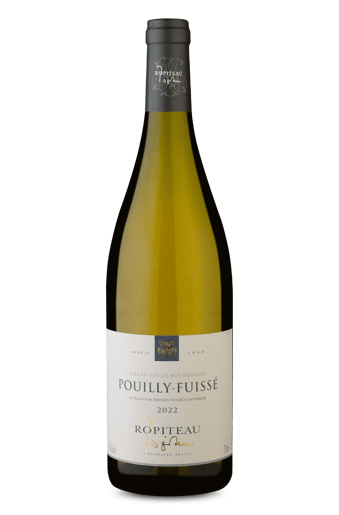

Ropiteau Frères A.O.C. Pouilly-Fuissé Blanc
Safra: 2022
Região: Bourgogne, França
Produtor: Ropiteau Frères
Classificação: Branco Seco
Volume: 750 ml
Teor Alcoólico: 13%
Temperatura de Serviço: 10°C a 12°C
Potencial de Guarda: 5 a 8 anos
Decantação: Não necessária
Descrição
O Ropiteau Frères Pouilly-Fuissé é um elegante vinho branco elaborado exclusivamente com uvas Chardonnay da prestigiada região da Borgonha. Apresenta aromas finos de frutas brancas, como pêssego e pera, além de nuances minerais e de manteiga fresca. Na boca, é fresco, equilibrado e envolvente, com final longo e refinado.
Harmonização
- Peixes grelhados com ervas
- Frango ao molho branco
- Queijos de cabra
- Risoto de limão siciliano
- Mariscos ao vinho branco
- Salada Caesar com frango
R$ 399,90